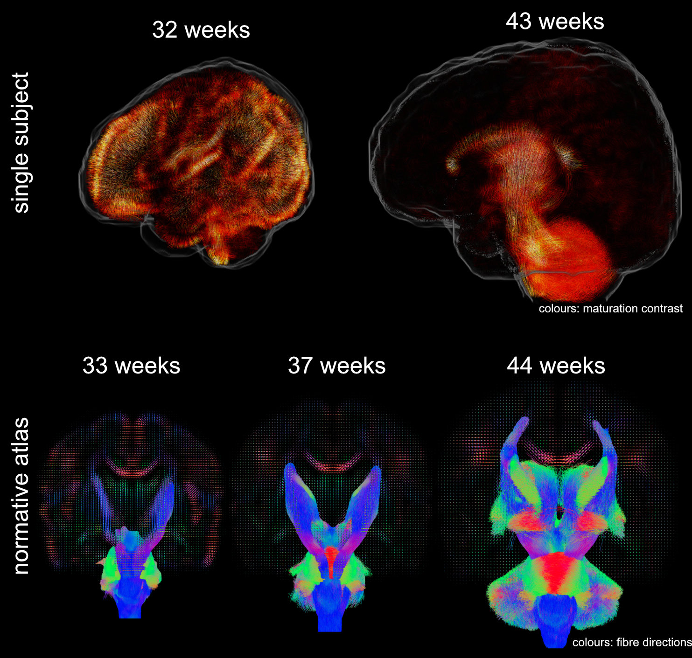
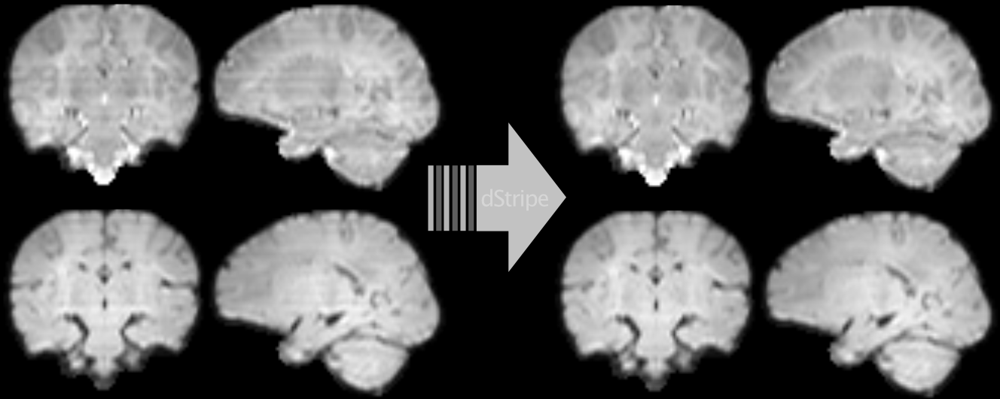
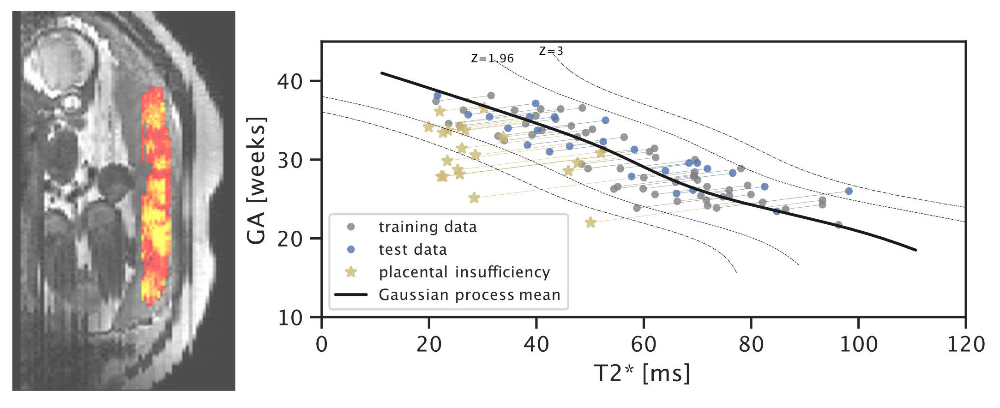

Max Pietsch

I use machine learning to extract information from medical imaging data.
In the weeks around birth, a baby’s brain tissue undergoes drastic changes visible on routinely acquired grayscale magnetic resonance imaging scans. However, changes are spatially and temporally varied and it is challenging to extract information that is specific to the processes that are happening on a cellular and morphological level.
I develop methods to learn features from 6D medical imaging data (multi-shell high-angular resolution diffusion-weighted magnetic resonance imaging). These data capture the movement of water molecules in and between brain cells which allows probing orientation-resolved microscopical properties of the developing brain. I use data-driven methods to extract features that allow decomposing the images into interpretable components that are related to brain development. Using these, one can answer questions about normal and abnormal tissue maturation in terms of maturation patterns. With the associated orientation information, one can trace these components throughout white matter pathways of the brain and investigate brain maturation as an interconnected network over time. Applications of these tools facilitate the in-vivo study of normal development and the detection of brain-related abnormalities such as those associated with premature birth.
Data were released in the form of a normative atlas of neonatal brain development from data acquired as part of the developing Human Connectome Project. Images from this work were featured in news articles in Wired, BBC, Guardian, and Nature Outlook and are shown below: 
Another line of my work uses deep learning to automatically detect and remove signatures of deteriorated data quality in diffusion MRI data. We train a convolutional neural network to make the data more consistent — without having access to non-corrupted data. Instead of supervised learning, we train the network using techniques based in statistical learning theory. Deep neural networks are powerful models but they can introduce artefacts into the images which is at odds with the need of medical data to be interpretable. We approach this problem by constraining the network to produce limited and well-defined changes that bound the scope of introducing local artefacts, therefore increasing the trust in the modified data. The code and pretrained neural network can be downloaded as Docker image from github.com/maxpietsch/dStripe. 
In recent work on placental health modelling, we predict health scores using a fast and clinical T2* weighted MRI scan. This work utilises placental mean T2* as an age-dependent biomarker for placental health. The method is clinically appealing as it is fast and fully automated and it operates in two stages with human-interpretable output: deep-learning-based organ segmentation and normative Bayesian modelling similar to growth charts. In our clinical cohort with MRI acquired at 3T, it can be used to identify early placental insufficiency with an AUC of 0.95. This work was also featured in the press in King’s College London Spotlight on Impact (9 Aug 2021), Healthcare in Europe (30 Sep 2021), the Imaging Wire (16 Aug 2021), and European Hospital (Aug/Sept 2021). 
selected publications
For a more complete list, please see my google scholar.-
ISMRM
-
ISMRM
-
NeuroimageCross-scanner and cross-protocol multi-shell diffusion MRI data harmonization: algorithms and resultsNeuroimage 2020
-
NeuroimageA framework for multi-component analysis of diffusion MRI data over the neonatal periodNeuroimage 2019
-
NeuroimageMRtrix3: A fast, flexible and open software framework for medical image processing and visualisationNeuroimage 2019
-
ISMRM
-
World J CardiolOptimal C-arm angulation during transcatheter aortic valve replacement: Accuracy of a rotational C-arm computed tomography based three dimensional heart modelWorld J Cardiol 2016